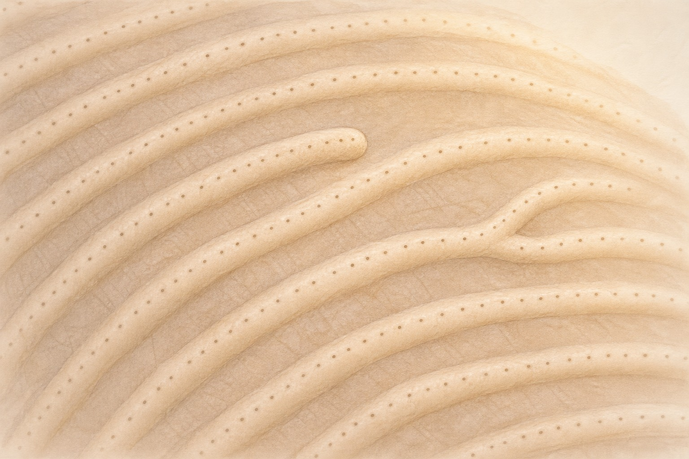
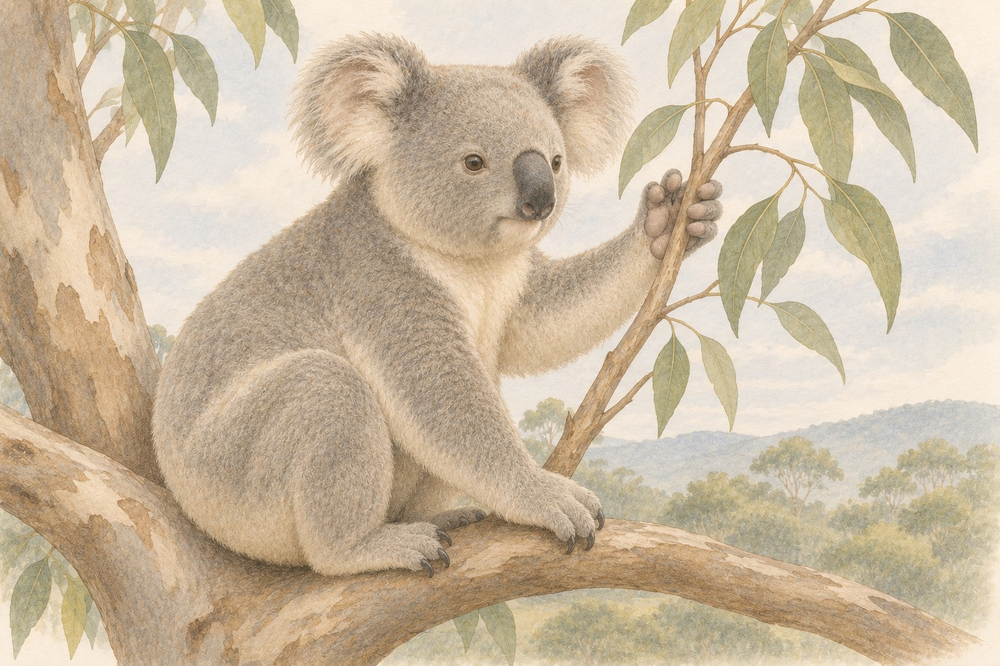
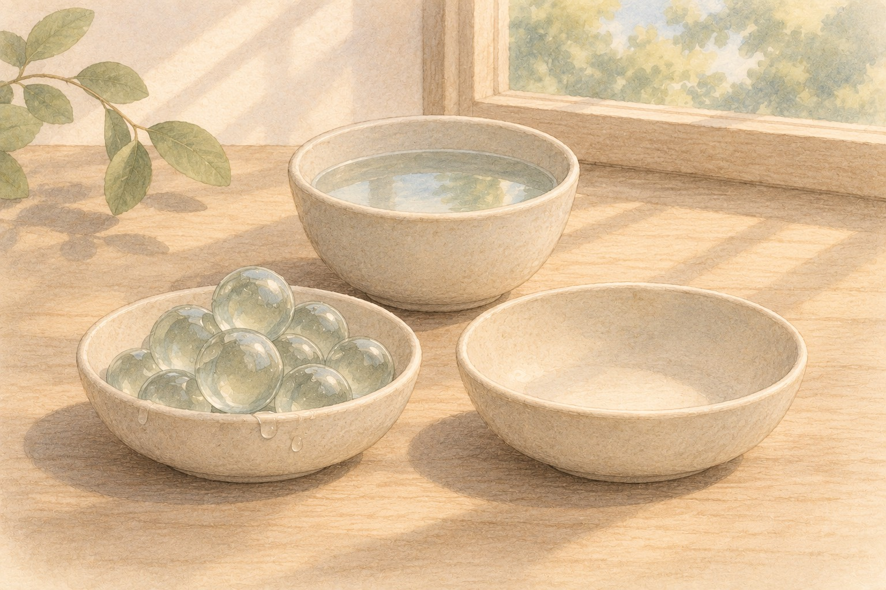
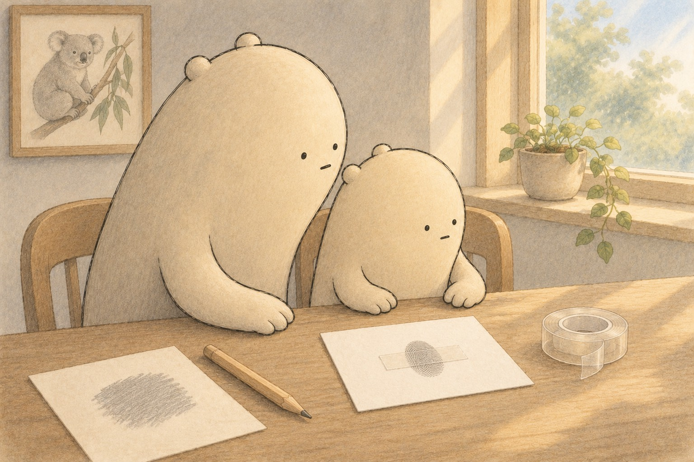

Find the three prints. One has ridges that curve back, one has a circle, and one has a small hill in the middle.
A little explanation & something to try
A loop has ridges that come in and curve back out the same side. A whorl has circles or a spiral. An arch has ridges that flow across with a bump in the middle. Loops are the most common, and arches are the rarest.
Try this. Rub a pencil hard on paper to make a dark gray patch. Press one fingertip on it. Press clear tape on your fingertip, peel it off, and stick it on white paper. Is your print a loop, a whorl or an arch?

Up close, ridges end, split and carry tiny pores.
What tiny details are inside a print?
Find a ridge that stops, and a ridge that splits in two. Look for the tiny dots along the top of the ridges.
A little explanation & something to try
Sweat pores sit in a row along the top of each ridge. Experts look at minutiae, the tiny places where a ridge ends or splits in two. A split is called a bifurcation. They compare these points, not just the pattern. Very rarely, a change in a gene called SMARCAD1 means a person is born with no fingerprints at all.
Try this. Look at your tape print with a magnifying glass if you have one. Find one place where a ridge ends. Then find one place where a ridge splits in two.

Koalas have prints that look very much like ours.
Why does a koala have fingerprints?
Look at the koala's hand holding the branch. Find the tips of its fingers.
A little explanation & something to try
Koala prints look very much like ours. But koalas are only distantly related to us, and their cousins, wombats and kangaroos, do not have prints. Scientists think prints formed separately in both because both grip and handle things.
Try this. Draw a koala hand holding a branch. Then trace your own hand next to it. Tell one way they are alike.

Maybe wrinkly fingers help hold wet things.
Why do fingers get wrinkly in the bath?
Find the two bowls, the wet marbles, and the bowl of water.
A little explanation & something to try
Wrinkly bath fingers are not just skin soaking up water. Your nerves control them. Tiny blood vessels under the skin get narrower, and the skin puckers. Scientists think wrinkles might help us grip wet things, but studies disagree, so for now we say maybe.
Try this. Time how fast you move wet marbles from one bowl to another with dry fingers. Soak your hands in warm water until they wrinkle, then try again. This is a fun try, not proof.
Fingerprint counts
Compare and round counts from a fingerprint notebook.
A loop, a whorl and an arch.
Choose one problem and draw the tens as sticks and the ones as dots to check.
1. Little Wonderer counts 38 ridges on one print and 52 ridges on another. Put >, <, or = in the circle. What is the greater count (or the shared count if equal)?
38 ○ 52
A small hint
Compare tens first, then ones. When both counts match, use = and give that shared count.
2. Next, Big Wonderer presses 71 prints on one page and 67 prints on the next page. Put >, <, or = in the circle. What is the greater count (or the shared count if equal)?
71 ○ 67
A small hint
Compare tens first, then ones. When both counts match, use = and give that shared count.
3. The little one finds 45 pores on one strip of tape and 45 pores on another. Put >, <, or = in the circle. What is the greater count (or the shared count if equal)?
45 ○ 45
A small hint
Compare tens first, then ones. When both counts match, use = and give that shared count.
4. The big one counts 34 ridge endings on a big drawing. What is 34 rounded to the nearest ten?
34 → nearest ten: ___
A small hint
Look at the ones. With 5 or more, go up to the next ten; otherwise go down.
5. The little one draws 86 tiny pore dots. What is 86 rounded to the nearest ten?
86 → nearest ten: ___
A small hint
Look at the ones. With 5 or more, go up to the next ten; otherwise go down.
6. The big one moves 65 wet marbles in a long game. What is 65 rounded to the nearest ten?
65 → nearest ten: ___
A small hint
Look at the ones. With 5 or more, go up to the next ten; otherwise go down.
Fingerprints, then deeper
Fingerprints Up Close
A hidden print
Little Wonderer held up a glass. "I don't see anything," the little one said. Big Wonderer tipped it to the light. A faint print showed up. Your fingertips have tiny ridges. The ridges carry a thin film of sweat and oil. When you touch something, the film copies the ridge pattern. Most prints are latent, which means hidden until someone makes them show.
Why can a fingertip leave a print on a glass?
Three patterns
Most prints belong to one of three pattern families. In a loop, ridges come in and curve back out the same side. In a whorl, ridges make circles or a spiral. In an arch, ridges flow across with a bump in the middle. Loops are the most common. Arches are the rarest. No two prints have ever been found to match, not even on identical twins.
How is a loop different from an arch?
Made before birth
Prints form before a baby is born. At about 7 to 8 weeks of growing, puffy pads appear on the fingertips. At about 10 to 11 weeks, ridges start to form. By about 15 to 17 weeks, the pattern is set. Twins get different prints because each fingertip grows in its own tiny way. After that, the pattern normally just grows bigger and keeps its shape, though a deep cut or some skin diseases can leave a scar.
Why do identical twins have different prints?
Koala prints
Koalas have prints that look very much like ours. Koalas are only distantly related to us, and their cousins, wombats and kangaroos, have none. Scientists think prints formed separately in both because both grip things. What are ridges for? In one lab test, ridges made the shakes from rubbing a fine texture much stronger. So scientists think ridges help us feel fine textures.
Why do scientists think both koalas and people have prints?

A safe print lift
Detectives make hidden prints show up in a lab. They dust powder, use a chemical called ninhydrin that turns prints purple, or use superglue fumes. Those are jobs for trained lab workers, not for kids. Little Wonderer and Big Wonderer made a safe one. They rubbed a pencil on paper, pressed a fingertip on it, and lifted the print with clear tape. The big one found a spot where a ridge split in two.
How did the Wonderers make a print show up safely?
Wrinkly fingers
After a long bath, fingers get wrinkly. Your nerves cause it. Blood vessels under the skin get narrower, and the skin puckers. Fingers with cut nerves do not wrinkle. Maybe the wrinkles help us grip wet things, like treads on a tire. One study found people moved wet marbles faster with wrinkly fingers. Another found no difference. So for now, we say maybe.
Why is the answer about wrinkly fingers still maybe?